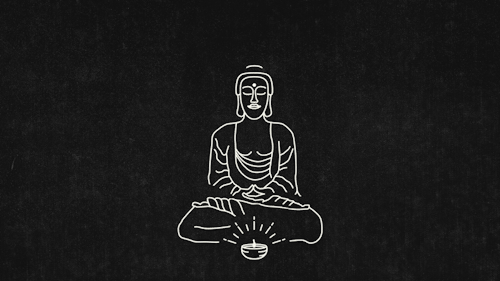
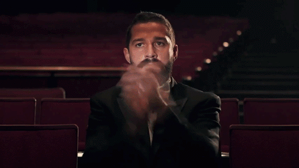

Thanks Be Given
A grateful approach 🙏 What am I thankful for?! For starters, just glad I woke up this morning. A few days in the year people take the time to give thanks?! This pains me to great extent. Valentine’s day is one of just a few examples where most people make up for the lack of love they exhibit to their significant others and try to buy it back in one night; sad. Well, I’m going to tell you right now I’m thankful for things that not many are thankful for. Sure, I could give you a blanket stateme
A grateful approach 🙏
What am I thankful for?! For starters, just glad I woke up this morning. A few days in the year people take the time to give thanks?! This pains me to great extent. Valentine’s day is one of just a few examples where most people make up for the lack of love they exhibit to their significant others and try to buy it back in one night; sad. Well, I’m going to tell you right now I’m thankful for things that not many are thankful for.
Sure, I could give you a blanket statement that I’m thankful for all that is, that I’m thankful for so and so, or whatchamacallit, but I’m not going to. Instead, I’m going to speak truth, my truth. Now I have to muster up the courage to dive into the most difficult parts of human emotion. Some wise ones say that fear is only the absence of courage. If you possess the courage, then the fear dwindles. You see, I have a firm belief that all the misery and travesty that is presented to you in your day is only done so because you have the strength and courage to get through it. No need to endure it, just move through it.
I welcome and am so thankful for all the death in my life. I am thankful for all the failure that I have to witness. I’m thankful for the accidents I have been in and the pain I had to suffer through. And I’m thankful for all the ill thoughts, racism, anger, hatred and emotional daggers that have been thrown at me or that I have chosen to stand in front of. Right now you’re probably scratching your head and wondering what kind of masochist would say these things. All these things we consider bad or horrible things are just moments in time when we are pushed to exist in a way that challenges our entire beings.
The duality of this little snow globe we live in is inseparable. Kahlil Gibran says it best:

“… joy and sorrow are inseparable. . . together they come and when one sits alone with you . . . remember that the other is asleep upon your bed.”
It is often when we are in the darkest realms within our lives do we see the brightest lights. That glimmer of hope that pulls us out from oblivion to exist and breathe life into another day. These are all blessings in disguise. The angels are amongst us, how dare anyone think that they come in forms of white cloth laden cherubs with bow and arrow. They are standing right beside you in the subway, they are sitting on the street with the courage to ask for help, they are the person serving you coffee in the morning. It’s definitely time to wake up.
With the smallest of awareness, you can be thankful for those angels being in your life. They teach us every day that there is a message waiting for us, if we only choose to wake up. Wake up from the “poor me” or the “life’s not fair” and my favorite, “it’s not my fault”. Yes, poor you for living with blinders up. Yes, life’s not fair when you make choices that put you in the predicament you’re in. And oh boy, not my fault?! Blaming someone else?! No finger pointing need be done, if it has to be, then please point it at yourself when you have these thoughts. Ain’t no one else but you creating your little story.
There’s always people in your life that you can connect to any and learn from. Not one day goes by without their collective energy vibrating in my snow globe. They woke me up. They were all my teachers, my students and my reflection. Sometimes I did not like what I saw, while other times I wouldn’t believe what I saw. Every ounce of me resonates with these people. Not because they are beautiful beyond all measure, not because they loved me more than any other humans on this planet, but because they helped shape me into who I am. That is what I’m most thankful for. The lens to view life with a fresh perspective.
“The only real voyage of discovery consists not in seeking new landscapes but in having new eyes.” -Marcel Proust

Say word, son.